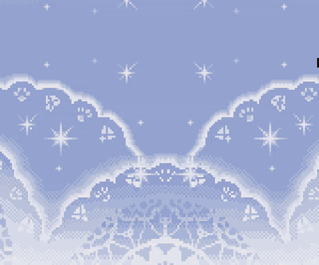
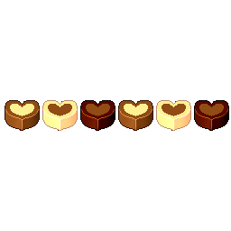

|  | ||||||
|
Home
Quiz
Sailors
Fun Corner
Guestbook

You are visitor number: Updates[9 Apr 25] Mercury's Site! Created a solo site for Sailor Mercury! This took a lot of brain-power 😴 I'm exhausted. [4 Apr 25] Major Re-Structuring Changed the project structure completely, meaning I had to go in and edit each anchor link -_- [22 Dec 24] Visitor Count & Styling Added a counter for the visitors to this site and made some minor styling changes. [15 Dec 24] Which Guardian Are You? Find which Sailor Guardian you resemble the most by taking the quiz! [14 Dec 24] Moon Prism Pixels A 90s style fansite for the Sailor Guardians! The name comes from Usagi's transformation command - 'Moon Prism Power, Make Up!' NoticeThe copyright for Sailor Moon is held by Naoko Takeuchi, TOEI, DiC, Kodansha, Bandai, and others. I do not claim ownership of their materials or Sailor Moon's image or likeness. No copyright infringement is intended. |
|